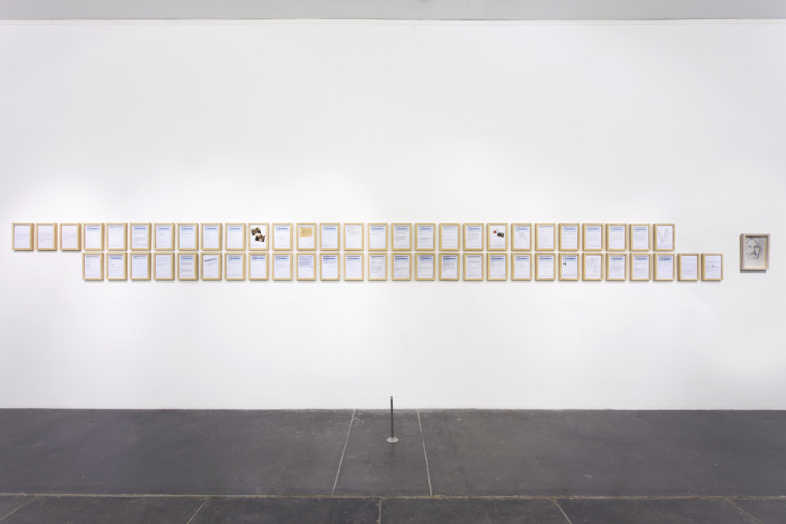
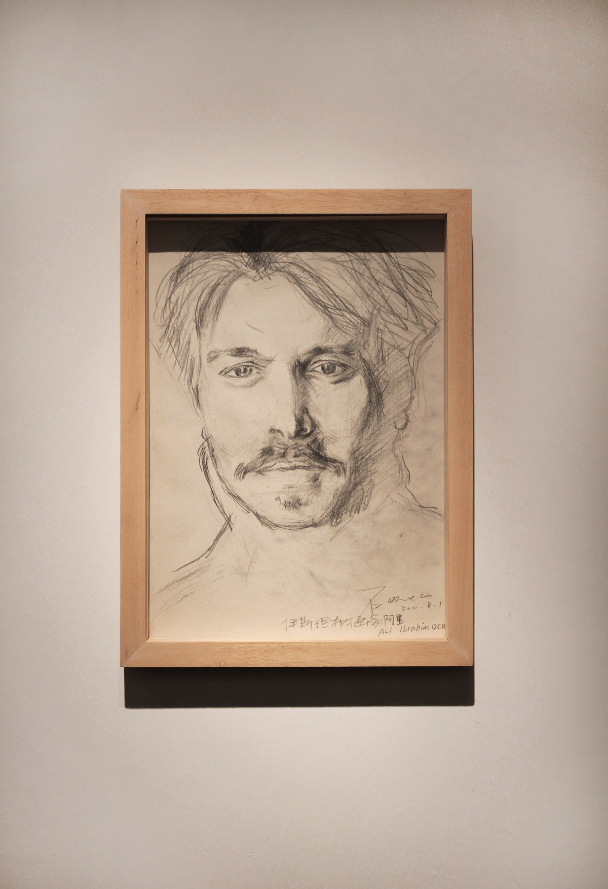
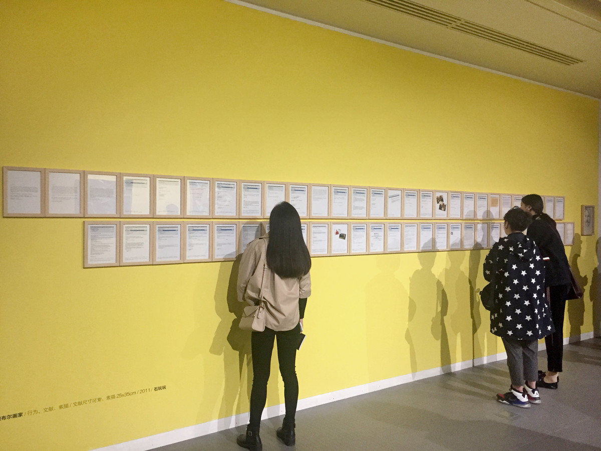
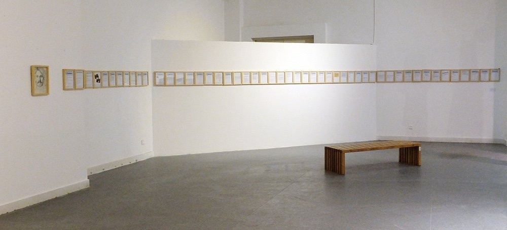
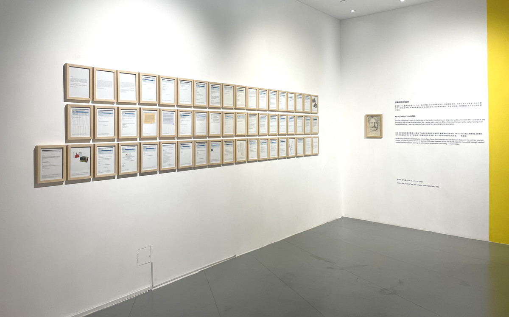

伊斯坦布尔画家 | AN ISTANBUL PAINTER

文献尺寸可变，素描25x35cm，2011
Action, Text, Sketch; Text size variable, Sketch 25x35cm, 2011
曾经某一天，我凭空设想了一个人：他叫阿里，生活在伊斯坦布尔，年龄跟我相仿，也是个年轻艺术家。我给阿里写了一份信，告诉他，如果他能看到这份信，给我回信，告诉我他的模样，我会给他画一张肖像画。9个月后我收到了回信。
One day, I imagined a man. His name was Ali. He lived in Istanbul. I wrote Ali a letter and told him that if he could see it and answer me and tell me what he looked like, I would paint a portrait of him. Nine months later I got a reply. A young man named Ali told me it was true. I painted a portrait of him according to his description.
在去年尤伦斯的青年群展上，展出了他的《伊斯坦布尔画家》。最普通的一张画在A4大小尺寸纸上的素描，是借助现代网络联系方式才终于找到这个叫做阿里的艺术家，将一次冒险的想象化为现实。——隋建国
At the Group Exhibition held last year in the Ullens Center for Contemporary Art, Wanwan displayed his work An Istanbul Painter - an ordinary sketch drawn on a piece of A4 paper. Wanwan found the Istanbul painter named Ali through modern Internet communications, turning an adventurous imagination into reality. ——Sui Jianguo
石玩玩近来尝试着把艺术实践抛入社会关系的偶然性中去完成，这使的他工作成为了一种社会测试。《伊斯坦布尔画家》是石玩玩根据自身所想象出的一个身处异邦的镜像，在石玩玩的设定中，“他”是一个三十岁左右的叫做“阿里”的年轻画家，居住在一个他毫不了解城市，如伊斯坦布尔。经过了各种可能的途径与漫长的过程，石玩玩找到了那个伊斯坦布尔的画家，展览中的55张文件与邮件呈现了这个经历，而素描肖像则是根据阿里的自我描述所画。但实际上，石玩玩的出发点并不是为了验证个人的想象，而更多是在观念中建构一种可能性的社会关系，并在其中实验几率的可能。——尤伦斯当代艺术中心
Shi Wanwan's recent attempts to cast his artistic practice into the contingency of social relations have made his work a social test. Istanbul painter is a mirror image of a foreign country imagined by Shi Wanwan. In the setting of Shi Wanwan, "he" is a thirty-year-old young painter named ”Ali" who lives in a city he knows nothing about, such as Istanbul. After a long and varied journey, Shi finds the Istanbul painter, an experience captured in 55 documents and emails in the exhibition, while sketched portraits are based on Ali's self-description. But in fact, the starting point of Shi Wanwan is not to test individual imagination, but more to construct a possible social relationship in the concept, and to experiment with the possibility of probability.——UCCA

尤伦斯当代艺术中心，北京
Ullens Center for Contemporary Art, Beijing

万营艺术空间，石家庄
Wanying Art Museum, Shijiazhuang

山东工艺美术学院美术馆，济南
SHANDONG UNIVERSITY OF ART&DESIGN MUSEUM, Jinan

金鸡湖美术馆，苏州
Jinji Lake Art Museum, Suzhou